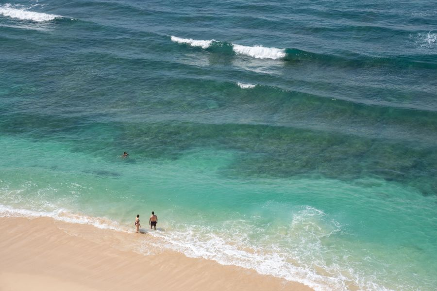
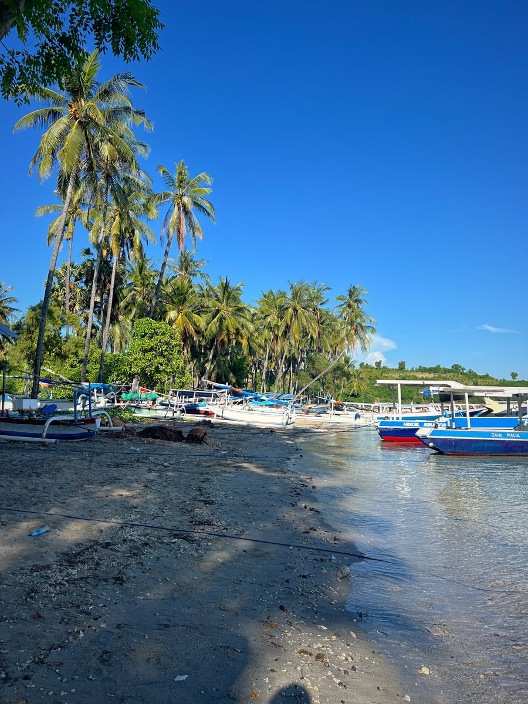

Bali
Rasakan hangatnya Pulau Dewata dengan mencoba berselancar di Pantai Kuta.
Mau ke mana? TERBANGIN aja.
Temukan penerbangan yang cocok dengan tujuan, waktu, dan budget perjalananmu. Pilih destinasi, kami bantu cari jalannya.

Rasakan hangatnya Pulau Dewata dengan mencoba berselancar di Pantai Kuta.

Jelajahi pesona kota budaya dengan berjalan santai menyusuri Malioboro.
Temukan gugusan pulau yang menawan dengan mendaki jalur pandang Pulau Padar.

Nikmati laut biru Lombok dengan snorkeling di perairan Gili Trawangan.

Temukan pulau karst dan laut jernih dengan snorkeling di Selat Dampier.

Jelajahi sisi hijau kota dengan menyusuri jembatan kayu Hutan Mangrove Margomulyo.